第十一章：希腊字母的动态行为（The Greeks and Their Behavior）
时间是有弹性的。 —— Marcel Proust
导读：本章要解决的问题
第七到十章逐个静态地定义了 delta、gamma、vega、theta 及次要希腊字母。本章把它们放进一个动态框架，研究希腊字母如何随时间和空间移动。Taleb 开篇给出一个对我们极重要的简化原理：分析只需时间和空间（资产与 strike 的关系）两个维度，因为在一阶和二阶导数上，时间和波动率施加的是同一种效应（尽管在组合价值上不同）。理由是布朗运动里方差（波动率的平方）恰好正比于时间，所以时间和波动率是一回事；时间真正独立起作用的地方只在 、（carry 率和贴现率），而这两项通常不带过分的意义。
本章要解决的问题是：**当时间流逝、当波动率移动、当现货漂移，你昨天测好的那套希腊字母明天还成立吗？它们自己会怎么变？**Taleb 用交易员的语言把这些变化命名出来：
- bleed（渗血）：希腊字母随时间的变化。delta bleed、gamma bleed，metaphor 是缓慢失血，期权交易员讨厌衰减。
- speed / "D"：希腊字母随空间（现货）的变化。DdeltaDspot、DgammaDspot、DvegaDspot，对数学家就是各种三阶导数。
- DdeltaDvol（稳定比）：delta 随波动率的变化，由此引出 forward/backward bleed。
- moments（头寸的矩）：把组合对分布各阶矩的敏感度排成一个无穷序列，第三矩是 skew，第四矩是尾部，一直到第七矩及以上。
- lock delta（锁定 delta / 渐近 delta）：放弃所有高阶希腊字母，只在 0 和无穷两个边界上做非参数压力测试。
对我们这类读者，本章是把"希腊字母是局部量"这个全书主题推到极致。它的理论价值在于：bleed 对 spot 的变化是四阶导数，Taleb 公开嘲讽只截到二阶的"泰勒展开思维"；"时间 ≡ 波动率平方"是布朗运动 的直接推论；头寸的矩序列对应分布的 mean-variance-skew-kurtosis 一路上去，第三矩（gamma 对现货的不对称）就是 skewness 敏感度，第四矩（gamma 的 gamma）就是 kurtosis 敏感度；Ito 那节用局部时间（local time）和布朗运动不可微，严格说明了"卖期权+在 strike 挂止损"为什么不是免费午餐；lock delta 则是放弃随机框架、退回到 robust/非参数统计的边界分析。笔记沿原文小节顺序展开，并在每个节点把这层映射写出来。
一、Bleed：gamma bleed 与 delta bleed（波动率不变）
bleed 是期权头寸的 delta 和 gamma 随时间流逝的变化。计算很直接，把组合用少一天到期重定价、取差：
bleed 的方向有一个清晰规律。时间把所有虚值期权推得更虚，从而减小它们的 delta；时间把所有实值期权推得更实，从而增大它们的 delta。这看似显然，但 Taleb 提醒一个容易混淆的点：**人们说 gamma 随时间增大，但一个被推得更虚的虚值期权会损失 gamma，所以结果是混合的。**账本管理者总被时间带来的变化困扰，因为他们的组合总是混着各种 strike、且强烈集中在偏离平值处，于是一个可观的每日 bleed 几乎是注定的。
一个交易员的限额是 delta、vega、theta 的最大敞口。某天他 long 虚值期权、市场尾盘暴涨，把他带进一个 long vega 因虚值期权位置而增大的区域，于是越限了。
这段对话值得我们记住，因为它正是本章的缩影。交易员辩解：他的 delta 是按更低波动率算的，所以受保护；他对 vega 有强凸性，使它在更高波动率下增大；要同时看对 spot 和对 vol 的两个三阶导数才看得懂。老板只会重复"你越限了 = 你想作弊"。Taleb 的点很锋利：**用一个静态的 delta/vega/theta 限额去框一个动态头寸，本身就是误解。**头寸的 dynamics（DdeltaDvol、DvegaDspot 这些三阶量）会在尾盘把你带到任何地方，而越限与否取决于你用哪一刻、哪个波动率算的快照。最荒谬的限额就是 delta 限制。
一个 long up-gamma、short down-gamma（第八章定义）的期权头寸，会随时间 bleed 成更短的 delta，反之亦然。
这条规则容易理解：(1) 这样的头寸是 long 虚值 call、short 虚值 put。call 的 delta 会减小（更短 delta），put 的 delta 也减小（更长 delta），两者都因虚值期权 delta 随时间减小而来；(2) 用 put-call parity，同一头寸可以用深度实值 call 和 put 构造，由 parity 规则（第一章期权等价）可证同样结果。
例：ratio diagonal 的 delta/gamma bleed
简化起见账本只有两笔交易：short 100 万面值、60 天到期的 100 call（OPT1）；long 504 万面值、30 天到期的 106 call（OPT2）。波动率都是 15.7% 年化，市场初始在 100，初始 delta 中性（两腿匹配）。表 11.1（节选）：
| 天数 | Delta1 | Gamma1 | Delta2 | Gamma2 | 总 Delta | 总 Gamma |
|---|---|---|---|---|---|---|
| 0 | -513 | -63 | 512 | 199 | 0 | 136 |
| 3 | -512 | -64 | 452 | 191 | -61 | 127 |
| 6 | -512 | -66 | 387 | 180 | -125 | 114 |
| 9 | -512 | -68 | 319 | 166 | -193 | 98 |
| 12 | -511 | -70 | 247 | 147 | -264 | 77 |
| 15 | -511 | -72 | 175 | 122 | -336 | 49 |
平值的 100 call（OPT1）的 delta 几乎不变（从 -513 到 -511），而 106 call（OPT2）的 delta 快速流失（从 512 到 175），它们"bleed"得很快。表里还显示 100 call 的 gamma 加速（绝对值从 63 到 72，正 gamma bleed）被 106 call 的 gamma 减速（199 到 122）抵消，对组合总 gamma 有重要影响（从 136 掉到 49）。一个初始 delta 中性的头寸，15 天后变成 -336 的 delta，纯粹是 bleed 造成的。
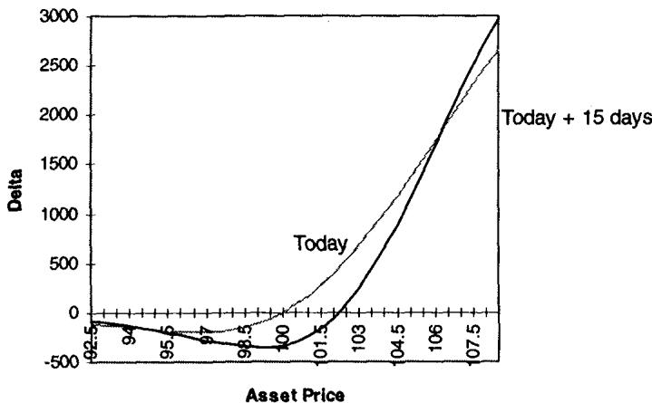
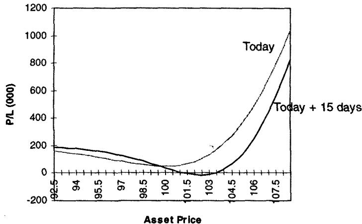
图 11.1 (A)(B) 显示 delta bleed 是topical（局部的），它依赖现货的位置，并在造成 bleed 的那个 strike 之上反向。
理论映射：bleed 对 spot 是四阶导数
这一节最该被我们吸收的，是 Taleb 对"泰勒展开思维"的公开嘲讽。bleed 本身是 、（希腊字母对时间的导数）；而"bleed 如何随 spot 变化"则是
这是一个混合的四阶敏感度。多数非期权交易员（尤其工程背景的）相信四阶导数在实务里无足轻重，他们被训练成砍掉二阶以上的一切（对期权就是砍到 gamma 为止）。Taleb 说这种态度与交易期权组合不兼容，因为组合的风险在不同水平之间突变。很多期权交易员都和"泰勒展开式的半吊子数学家"有过争执，后者嘲笑他们用四阶及更高导数去看头寸的核心。这呼应第八章 up/down gamma 揭示三阶 speed 的逻辑：只要组合里 strike 密集且分布不均，二阶截断就会系统性地漏掉风险，而这些风险恰好在你需要它的大移动处最大。
Bleed 与波动率变化
隐含波动率的变化不会过分复杂化 bleed。波动率移动可以像一种时间加速，效应与期权长度挂钩（更精确地说，波动率移动的平方正比于期权长度）。每个期权初学者都知道期权越短、时间对结构的效应越大。例：一个 1 年期、20 delta 的 call，在 16% 波动率下一天损失 0.04 delta（从 20% 到 19.96%）；而波动率从 16% 降到 15% 会把 delta 从 20% 移到 18.2%。后者的效应大得多，这就是"波动率移动 ≡ 时间加速"的数值体现。
障碍期权交易员要注意双向 bleed。波动率上升可能先拉长 delta，进一步上升又可能减小它。障碍期权因此极其 topical：在可能地图的一个点上管用的，在别的点上未必管用。第三、四、五、六阶矩永远在那里迷惑操作者。
这条警告把 bleed、speed 和后面的"矩"串起来：障碍期权的高阶敏感度符号会随现货位置翻转，所以"波动率上升对 delta 是好是坏"这种问题在障碍期权上没有统一答案。
二、走向香草期权的到期
走向到期的 bleed 快到需要大量经验才能妥善处理。这正是上市期权交易员（离散到期）与 OTC 操作者（几乎连续到期）经验差异最明显的地方。bleed 此时快到波动率变化对它影响不大。
许多操作者开始把一个到期当成二元的（binary）来交易，把全部 bleed 在前一天生成的报告上消化掉。前一天 5 点，他们生成一个 delta 为二元形式的 run：虚值为 0、实值为 100%。但这不意味着他们会以二元方式调仓，多数人仍平滑地、渐进地交易；有些人用更复杂的装置"按时钟交易"，让风险系统连续重定价、调整 delta。
例：到期日报告
市场在 100，操作者当天上午 10 点在 OTC 市场 short 101 call。图 11.2、11.3 是到期前一天的期权 delta 和价格（Report I），图 11.4、11.5 是到期当天的（Report II）。
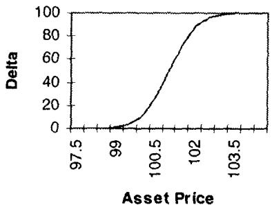
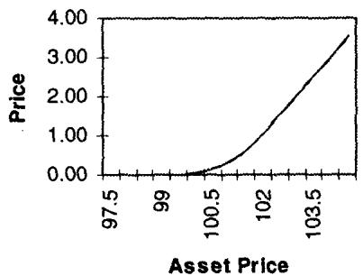
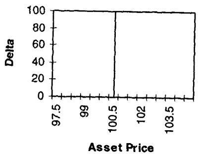
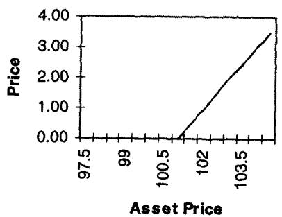
操作者需要在 Report I 和 Report II 之间切换，确保收敛平滑发生。理想情况是遵守平滑规则：两点之间的过渡不突兀。Report I 始终成立，但随时间推移连续地重新缩放（rescaling）。到期前一天看 Report I，然后通过缩窄刻度来维持两点之间相同的平滑轮廓，像显微镜逐渐增大放大倍数。下面三张表展示 delta 对应的资产价格如何随时间收窄到 strike 101 附近：
| Delta | 前一天 | 半天 | 1 小时 |
|---|---|---|---|
| 1 | 98 | 98.84 | 100.37 |
| 25 | 100.44 | 100.61 | 100.89 |
| 50 | 101.00 | 101.00 | 101.00 |
| 75 | 101.65 | 101.40 | 101.11 |
| 99 | 102.95 | 102.38 | 101.40 |
随着时间从一天缩到一小时，delta 从 1 到 99 所对应的价格区间从 [98, 102.95] 收窄到 [100.37, 101.40]。这就是 gamma 在 ATM 临到期发散（）的几何形象：delta 曲线越来越陡，最终逼近 strike 处的阶跃。
如果交易员没有交易成本，到期会完全平滑（如 BSM 公式）。但交易员必须把交易限制在若干离散干预上。这不意味着他们要以二元方式调 delta，他们必须记住黄金法则：对冲就是平滑（hedging is smoothing）。
Option Wizard（进阶）：一点 Ito 微积分
这是本章理论最深的一节，对我们这类读者最该精读。Taleb 第一次面试时，一位资深外汇交易员在番茄酱餐巾纸上给他画了个方案：卖一个 USD-DEM call 收取丰厚权利金，然后在 strike 处挂一个止损单买入全部面值；若现货回穿就反向操作。照这个"绝妙"策略，市场上的权利金显得毫无道理。Taleb 想表达怀疑，却没法向期权主管解释随机积分（何况那是 1983 年，期权交易员还隐瞒 MBA 以外的学位以躲避当时盛行的"书呆子歧视"）。
为什么这个策略行不通？Taleb 给出几条精确的理由：
**其一，局部时间（local time）永不为零，因为布朗运动不可微。**电子表格练习告诉我们布朗运动永远不会变平滑，把时间区间取得更小并不会让它更可微，否则就存在一个跑赢其他所有策略的再平衡策略：只要在"函数变平滑"的那个区间再平衡，就能保住全部权利金，这本书也就不必写了。
**其二，再平衡频率不影响期权的公允价值。**在 BSM 无交易成本世界里，再平衡 P/L 不依赖再平衡频率。无论你在 、、 调仓（对应现货移动 、），期望 P/L 不变，只是调整期越小越精确。理解 Ito 微积分的关键是：决定再平衡与最终执行价之间永远有一个滞后，这个滞后永远无法根除。
**其三，对冲成本的量级。**对冲成本是
乘以在 与 之间来回摆动所花的时间所产生的波动率，因为交易员在移动 之后才对冲，于是损失 乘以面值。
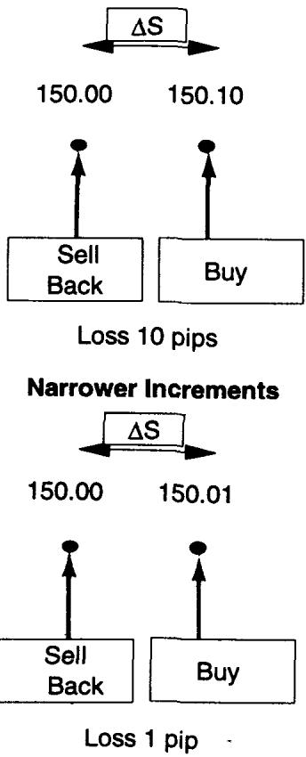
实务上，他在 USD-DEM 的 1.5000 与 1.5001 之间付一个 tick 交易成本的次数，等于他在 1.5000 与 1.5100 之间付 100 个 tick 成本的次数，因为市场会以补偿的方式更频繁地在 1.5000 与 1.5001 之间穿梭。
理论映射：局部时间与 √(2/π) 的来历
这一节是把 BSM 的复制论用 Ito-Tanaka 的语言讲给交易员听。那个 并非凑出来的常数：标准正态的平均绝对值 ，对布朗运动有 。所谓"在 strike 挂止损复制期权"想利用的是支付的折点，而折点处的对冲损益由布朗运动在该水平的局部时间 刻画（Tanaka 公式把 的二阶项正好写成局部时间的积分）。局部时间度量"现货在 strike 附近逗留并穿越的累积量"，它严格为正、不随调仓变细而消失，这正是布朗运动不可微（无界变差）的体现。Taleb 的"1 个 tick 穿越 100 次 = 100 个 tick 穿越 1 次"是局部时间标度律 的直觉版：小区间穿越频率高，恰好补偿其单次成本小。
第一结论：复制期权的成本（无交易成本假设下），无论是"在 strike 买入全部面值"还是"连续再平衡 delta"，期望相同，都等于 BSM 价值。第二结论（值得深思）：某些情况下，市场的"皱褶"反而偏向离散增量+全面值执行的策略，有央行支撑的市场会穿过干预水平不再回来；序列相关的市场里，一些图表派和巫毒交易员乐于在某水平下 short delta、之上 long delta。这第二结论很 Taleb：理论上等价的两种复制，在真实市场的非布朗特征下会分出高下。
三、DdeltaDvol（稳定比）与稳定性测试
DdeltaDvol 对应 delta 因波动率水平变化而产生的改变。概念类似 bleed，但能双向移动。**波动率上升对期权组合施加"时间倒流"的效应，波动率下降则使时间缩短、效应与 bleed 完全相同。**波动率移动对组合的效应叫 forward and backward bleed（前向与后向渗血）。
更进阶地，一个由价差构成的组合，不测试 bleed 和 DdeltaDvol 两者的效应就无法投影到未来。交易员只能跑一系列带隐含波动率变化的路径情景，并假设自己保持 delta 中性地重定价组合。因为 delta 中性依赖再平衡点的波动率，这个练习叫路径依赖组合测试（path-dependent portfolio testing）。这一点对我们很关键：它说明 delta-neutral 并非一个一次性锁定的状态，它是一条依赖波动率路径的曲线，投影未来必须同时让时间和波动率动。
稳定性测试 1
交易员应抬高波动率、检查一阶导数尤其是 delta。delta 增大意味着头寸在上涨中变得越来越 long vega、在下跌中越来越 short，这叫正 DdeltaDvol，意味着账本在平值之下净 short 期权、在平值之上净 long 期权。负 DdeltaDvol 则相反。
例：一个简单的垂直价差，奇怪地，是最可能不稳定的候选。若操作者 long 100 call、short 110 call，Test 1 下 delta 会缩短：更高波动率会抬高虚值 110 call 的 delta，而平值 100 call 的 delta 保持不变，于是价差的净 delta 减小。
forward bleed 是到期变短的时间效应（把组合往后推一天）。backward bleed 是时间倒流的效应，类似反向时间衰减；波动率上升对期权价格的非利息部分正是施加这种效应。
这个测试需要例行地跑在新兴市场货币、biased asset 等"市场下跌时不宜 short 波动率"的产品上。它比需要矩阵的测试更简单，但只说明 vega 对 skew 的敏感度，对 gamma 说得很少。
理论映射：DdeltaDvol 就是 vanna，再次现身
DdeltaDvol 正是第八章 shadow gamma 里那个 vanna。本章给它的新洞见是把它和时间打通：因为 ，波动率上升等价于"剩余时间变长"（时间倒流），波动率下降等价于"时间加速"。所以 DdeltaDvol 和 delta bleed 是同一个量的两种参数化，一个对 求导、一个对 求导，两者通过 这个总方差锁在一起。正 DdeltaDvol（账本下方 short、上方 long 期权）意味着 vanna 为正，市场上涨时 long vega 增强、下跌时减弱。这就是为什么垂直价差会不稳定：它的 vanna 不为零，delta 会随波动率漂移，一个看似锁死的方向头寸在波动率移动后悄悄松动。
稳定性测试 2：渐近 vega 测试
在标的不同水平重复 Test 1，能显示地形（topography）不同位置上的不同敞口。有时市场涨过或跌破某个切点时 vega 会"翻转（flip）"。这种反转通常由期权在某个位置的聚集（clustering）主导某片区域引起，而那个聚集又会被更远离平值的另一个聚集主导。
例：long 110 call 1 亿美元，short 130 call 3 亿美元。当波动率足够低、市场停在 100 到 115 之间时，账本呈 long vega（正 DdeltaDvol Test）；但在更高波动率水平，测试会反转、显示负 DdeltaDvol。这个例子里 vega 显得参差（jagged）。然而波动率的骤升会把 vega 在整个谱上变成单调的 short。这叫渐近 vega 测试（asymptotic vega test），只用于压力测试，因为它给了极度虚值的期权过分的重要性（3 亿的 130 call 在极高波动率下盖过 1 亿的 110 call）。
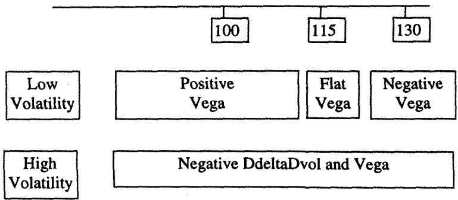
图 11.6 展示期权聚集如何让 vega 敞口随现货位置翻转：近处的聚集在中等波动率主导，远处更大的聚集在高波动率主导。这与第九章波动率曲面的 skew 旋转、第八章的 volatility map 是同一现象在 vega 地形上的体现。
四、期权头寸的矩（Moments）
矩是数学家刻画分布高阶行为的方式。Taleb 所说的"头寸的矩"指期权账对分布高阶矩的敏感度。现代金融依赖正态分布，让理论家可以忽略高阶矩，因为正态分布完全由前两阶矩（均值和波动率）刻画。一个"紧致（compact）"分布（Ingersoll, 1986）定义为高阶矩相对二阶矩越来越小的分布，紧致支撑表现为钟形曲线的尾部迅速趋零。于是理论上期权交易员只暴露于市场方向（delta）和市场波动率（gamma），高阶导数不该真正重要。
可惜真实世界的分布不像正态（除非偶然），于是要操心厚尾、正负 skew、跳跃这些烦人的事。Taleb 因此把数学语言拉伸一下，用"头寸的矩"而非"分布的矩"。头寸的矩代表对标的某阶变化的敏感度，关于高阶矩的信息越多，交易员越能在更宽的价格范围里追踪头寸、预测变化。操作者在他们框架里看矩，关注的是资产价格变化的阶（时间保持不变），所以矩方法对 vega 及其变化、对时间敏感度说得很少。
Taleb 给出矩的序列，这是本章最该建立的"理论↔实务"映射：
| 矩 | 期权头寸的含义 | 对应的分布特征 |
|---|---|---|
| 第一矩 | delta，对分布均值的敞口 | mean |
| 第二矩 | delta 的 delta = gamma | variance |
| 第三矩 | gamma 的 delta = skew，gamma 随资产价格的不对称 | skewness |
| 第四矩 | 尾部 = gamma 的 gamma（二阶的二阶） | kurtosis |
| 第五矩 | 第四矩的不对称敏感度 | 5th moment |
| 第六矩 | 除复合期权外，偶数矩不太凶 | 6th moment |
| 第七矩 | 凸性随上涨/下跌的变化符号 | 7th moment |
关于第三矩：若 gamma 在上涨中更正、在下跌中更负，第三矩为正，否则为负。Taleb 点出一条优美的规律：**奇数矩是对称性（symmetry）的指标，偶数矩是凸性（convexity）的指标。**第四矩为正时头寸是凸的、可以安睡，实务上意味着 gamma 在市场远离中心时增大、在波动率下降时减小。
概率学家通常忽略高阶矩（它们消失得很快），但期权交易员出奇地不忽略，对他们这是在高阶矩上微调头寸的本职工作。Taleb 讲了个真事：一位概率学家在数学金融会议上听两个期权交易员午餐时争论某分布的第七矩，被噎住了。
一个铺开在分布所有时空点上的期权账会对"矩的矩"极度敏感、且无穷无尽，哪怕不加入凶悍的复合期权结构。原因是交易员倾向维持 delta 中性、gamma 中性的账本，成千上万个 strike 相互抵消。**抵消低阶矩（局部）相当容易（一个电话搞定前两阶矩），但抵消接下来 5000 个矩就得关掉整个账本。**沿风险管理头寸往下看，能看出期权交易员为什么是好的概率专家：
- 第五矩：第四矩的不对称敏感度。一个只含 short 美式障碍期权、用 short 香草期权对冲的组合，会对第五矩极度敏感：市场逼近障碍时凹性增强，远离时更线性。
- 第六矩：除复合期权外，偶数矩似乎不太凶。
- 第七矩：凸性随标的上涨/下跌的变化符号。典型地，用市场一侧的高阶虚值期权（只 long 虚值的 call on calls）对一个低阶平值期权（如香草平值）构造的凸性头寸，会有非常显著的第七矩。在 call on calls vs 平值的情形里，凸性会下滑并触零；当有人 buy 虚值 call on calls、sell 虚值 put on calls（当然 delta 中性）时，第七矩会非常吓人。
用复合期权能达到严重高阶的矩。一个分期付款期权（installment option，五阶复合期权）的对冲稳定性至少要考虑九个矩。
在低阶矩上看似中性、却在高阶矩上有递增敞口的头寸，会带来交易困难。
例如一个 delta 中性的风险逆转，对任何止步于 delta 和 gamma 的人都显得无害，但 skew 能对 P/L 有剧烈影响。**skew 可以比第二矩更易波动，第四矩头寸也是如此。**这条规则是全章的脊柱，它把第八章风险逆转、第九章 skew 旋转、第十章复合期权久期全部收编进一个统一的"矩敏感度"框架：真正的风险住在高阶矩，而低阶矩的中性恰恰是把你诱进高阶矩陷阱的伪装。
理论映射：头寸的矩就是支付函数对分布累积量的配对
把这套"头寸的矩"翻译成我们的语言，它其实是支付函数的各阶导数与分布各阶矩（累积量）的配对。期权价值的扰动可展开为
其中 是头寸的第 阶希腊字母（delta、gamma、speed、color...）， 是分布的第 阶（中心）矩。正态分布下 对 要么为零（奇数）、要么由方差完全决定（偶数），所以高阶希腊字母无所谓。真实分布有非零 skewness、超额 kurtosis，于是第三阶（DgammaDspot）、第四阶（gamma 的 gamma）希腊字母就和分布的偏度、峰度配上了对，产生真实 P/L。Taleb 的"奇数矩管对称、偶数矩管凸性"正是因为奇数阶导数捕捉支付的不对称、偶数阶捕捉曲率。一个 delta/gamma 中性的账本只是把 项清零， 项仍在，而它们的系数（高阶希腊字母）在 strike 密集的账本里可以巨大。
五、忽略高阶希腊字母：Lock Delta
压力测试是风险管理的必需。lock delta（锁定 delta），或叫渐近 delta（asymptotic delta）方法，度量衍生品组合在极端边界（一般是 0 或无穷）上的风险。它的主要用途是显示被情景分析掩盖的头寸结构。
市场参数相当不稳定，所以总有必要做独立于分布的检验。黎巴嫩里拉大部分时间盯住美元、政治事故后常跳跃，连厚尾和 skew 的概念都因市场极度非正态而几乎不适用。用 gamma 这类希腊字母代表危险，对含此类资产的组合做的检验需要完全 street-smart，用简单情景（如：货币跌到某水平，我的 P/L 是多少？）。
非参数检验定义为不对分布（及其参数）做假设的检验，统计学里有一整个叫"稳健（robust）"的分支处理这类问题，压力测试属于非参数范畴。它对新兴市场债务这类行为恶劣的工具是必需的，因为其分布和参数（尤其波动率）不稳定到让常规风险工具失效。
在 0 或无穷这两个边界上，除 delta 外的偏导数按定义为零：组合不再像衍生品组合那样行为，对波动率的敏感度为零，gamma 和 vega 都是零。在这个意义上，把这个度量叫"delta"都算夸张。这个度量是"假如所有期权都被行权后标的的净额"。对不含奇异期权和相关性产品的头寸，它字面上可以在餐巾纸上做：数净 call 数、加上现金和期货、现值化、翻译成渐近最大 up-delta；对 put 同理得到最大 down-delta。
能在市场大冲击（以及工具间常规关联的崩塌）中幸存的公司，是那些幸运地没有"科学派"风险经理的公司。
Taleb 的这句很尖锐：有经验的风险经理不太把重模型当真，生存的关键在于区分"相信模型的"和"自信到不相信模型的"风险经理。
三个 lock delta 例子
所有例子里市场都在 100。
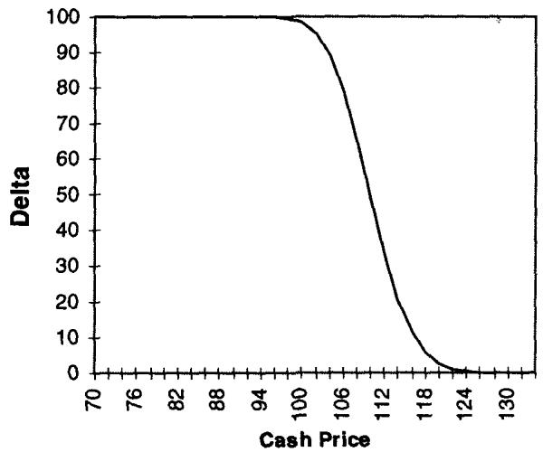
例 1（covered write）：long 100 期货、short 100 张 3 个月 110 call。上行渐近 delta 为 0，下行渐近 delta 为 long 100（图 11.7）。直觉：涨上去 call 被行权、期货多头被抵消；跌下去 call 作废、只剩 long 100 期货。
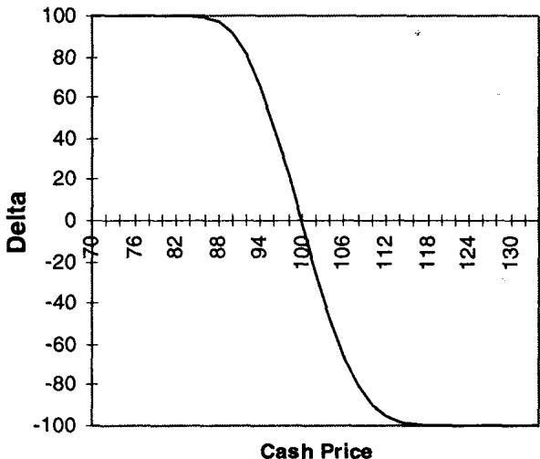
例 2（strangle write）：short 100 张 104 call、short 100 张 96 put（96-104 宽跨式空头）。上行渐近 delta 为 short 100，下行渐近 delta 为 long 100（图 11.8）。
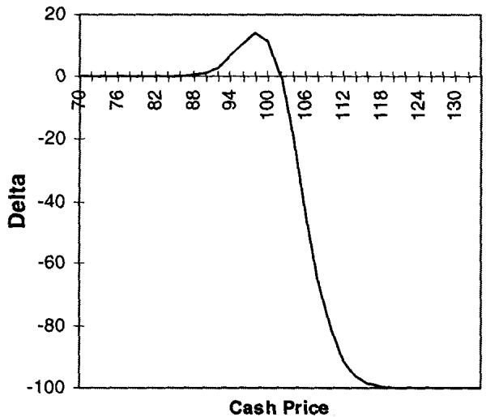
例 3（ratio write）：long 100 张 100 call、short 200 张 104 call（比率写）。上行渐近 delta 为 short 100，下行渐近 delta 为 0（图 11.9）。
理论映射：lock delta 是边界上的支付斜率，故意丢掉所有 optionality
期权做市商发现模拟矩阵之前，保证金系统主要基于渐近 delta：清算公司测量上行与下行风险的净差，按净残余敞口收保证金。covered writer 被免保证金，但多卖一个 call（one-by-two covered write）会让保证金变成裸 call 的。清算公司当时对期权定价的数学不感兴趣，也不操心希腊字母，反而保护了自己。早期非数学的股票期权交易员心态完全实用主义：股票因收购传言突然跳跃、波动率不稳定，生存本能让他们在分布有尖锐厚尾时不敢太信公式和基于波动率的度量。
用我们的语言，lock delta 就是支付函数在 和 两个边界上的斜率 。在那里所有 optionality 消失（期权要么必然行权、要么必然作废），gamma、vega、theta 全归零，组合退化成一篮线性的标的头寸。这恰恰是它的价值：**它故意丢掉所有依赖分布的高阶量，只问"如果发生一次大到没时间对冲的跳跃，我净持有多少标的"。**OTC 交易商不受保证金约束，用常规参数情景分析，因此没有"心胸狭窄的交易所"这条看门狗保护他们免受非统计风险。
渐近 delta 在动态对冲下失去意义，因为它不计入点之间的对冲；反过来，它也不揭示可能远超其披露金额的 whipsaw 风险。简言之，**它只披露交易员来不及对冲的事件风险。**这与本章开头 bleed/speed 的连续框架形成互补：一个管"参数缓慢漂移时希腊字母怎么变"，一个管"参数瞬间跳到边界时我还剩什么"。
六、本章综述：理论与实务的对照
| Taleb 的实务命题 | 对应的理论命题 |
|---|---|
| 时间和波动率在一二阶导数上是同一效应 | 布朗运动 ，方差正比于时间 |
| bleed：希腊字母随时间变化 | 、 |
| bleed 是 topical、在 strike 之上反向 | bleed 对 spot 的变化是四阶混合导数 |
| 嘲讽"砍到二阶"的泰勒思维 | strike 密集账本的风险在三、四阶及以上 |
| 波动率移动 ≡ 时间加速 | 期权长度 |
| 对冲就是平滑 | 临到期 ，delta 曲线趋阶跃 |
| 在 strike 挂止损复制期权不是免费午餐 | 局部时间永不为零，布朗运动不可微 |
| 对冲成本 | ，局部时间标度律 |
| 再平衡频率不改变公允价值 | BSM 无成本世界，期望 P/L 与频率无关 |
| DdeltaDvol = forward/backward bleed | vanna ，与 bleed 经 锁定 |
| 垂直价差最易不稳定 | 非零 vanna 使 delta 随波动率漂移 |
| 渐近 vega 测试、期权聚集 | vega 地形随现货翻转，远处 cluster 主导高波动率 |
| 头寸的矩序列 delta-gamma-skew-tails | 支付各阶导数与分布各阶矩配对 |
| 奇数矩管对称、偶数矩管凸性 | 奇阶导捕捉不对称、偶阶导捕捉曲率 |
| 低阶中性、高阶暴露最难交易 | 清零 项， 项系数仍大 |
| lock delta：边界上只剩净标的 | 时 optionality 消失，退化为线性 |
| 渐近 delta 只披露来不及对冲的事件 | 边界斜率，不含路径与 whipsaw |
核心观点
第一，希腊字母会自己移动。bleed（随时间）和 speed（随现货）说明你测好的 delta/gamma 不是常数，它们的变化本身就是更高阶的风险。用静态限额框动态头寸是误解。
第二，时间就是波动率。因为 ，波动率上升等于时间倒流、下降等于时间加速。delta bleed 和 DdeltaDvol（vanna）是同一个量的两种参数化。
第三，风险住在高阶矩。头寸的矩序列把 delta-gamma-skew-tails 一路排下去，真实世界的非正态让第三、四阶及以上的希腊字母真正产生 P/L。低阶中性是高阶陷阱的伪装。
第四，复制期权没有免费午餐。局部时间永不为零、布朗运动不可微，"在 strike 挂止损"的策略骗不过 Ito。再平衡频率不改变公允价值，只改变精度。
第五，边界要用非参数压力测试。lock delta 故意丢掉所有 optionality，只问极端跳跃后净持有多少标的。能在大冲击中幸存的，是不盲信模型的人。
面对一个希腊字母数字的操作清单
- 这个 delta/gamma 会怎么 bleed？一天、一周、一个周末后它移到哪？
- bleed 是 topical 的吗？它在哪个 strike 之上反向？四阶效应大吗？
- 波动率移动会怎么影响它？正还是负 DdeltaDvol？这是该跑 forward/backward bleed 的 biased asset 吗？
- 走向到期时 gamma 会不会发散？我能平滑地在 Report I 和 Report II 之间过渡吗？
- 我是不是在幻想"卖期权+挂止损"能锁住权利金？局部时间提醒我那不是免费的。
- 头寸在低阶矩中性，高阶矩（skew、tails、第七矩）暴露多少？
- 这是含障碍或复合期权的账本吗？需要追踪到第五、第七、第九矩吗？
- 期权聚集会让 vega 在某个现货水平翻转吗？
- 极端跳跃下我的 lock delta 是多少？上行、下行各净持有多少标的？
- 这个度量披露的是渐进对冲的风险，还是来不及对冲的事件风险？两者我都看了吗？
一句话收束
本章最该记住的一句：**希腊字母从来不是钉死的数，它是会随时间、波动率、现货自己游走的活物。**时间和波动率是同一回事，delta 会 bleed、vega 会翻转、风险一层层藏在你以为可以忽略的高阶矩里。真正的高手既能用连续框架追踪这些游走（bleed、speed、矩），又能在模型失效的边界上退回餐巾纸，只问一句：如果市场跳到我来不及对冲的地方，我净持有多少标的。